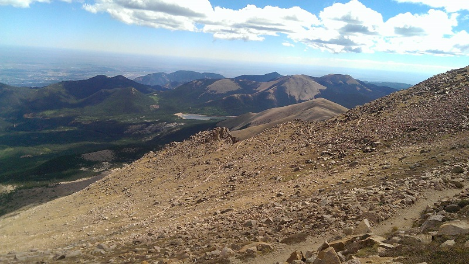

Fred Barr was born in June of 1882 in Arkansas. When he was eleven his family moved to Colorado. In the early 1900’s Barr worked with his father William operating a busniess that offered tourists rides on burros & carriages. When the Manitou Incline Railway opened in 1908, Barr was offering trips on his burros from Mount Manitou to the summit of Pikes Peak.
Starting in 1914 Barr worked on a trail all the way to the summit. A newspaper article of June 1, 1921 writes: “His Pikes Peak trail was completed, except for a short gap high above timberline, when snow set in last fall. It will be completed and ready for use this summer.”
In 1922 Barr created a camp at 10,200 feet that would eventaully be used for tourists and hikers on their way to the summit. After completing the trail and camp, Barr worked the camp until his death in 1940.
Today, Barr Trail stretches 13 miles from Manitou Springs to the summit of Pikes Peak. The trail starts at 6.700' and rises all the way to 14,115' giving Barr Trail an elevation gain of more than 7,000'!
Barr Camp is still active as ever. Staffed year round hikers can find a nice break from the trail while they rest and refil their supplies. For those wanting to spend the night, Barr Camp offers beds inside the cabin, leanto sheleters, and tent sites. Don't forget to load up on Spagetti and the famous 'Pikes Peak Power Pancakes'!
Fred Barr's legacy lives on as thousands of people from all over the world hike the trail that bears his name to the summit of Pikes Peak
Barr Trail offers a unique experience as it winds past the trees, above the clouds, and into the sky. The challenging journey is well worth the effort. Filled with changing landscapes, a variety of wildlife and amazing vistas, Barr Trail is the experience of a lifetime.